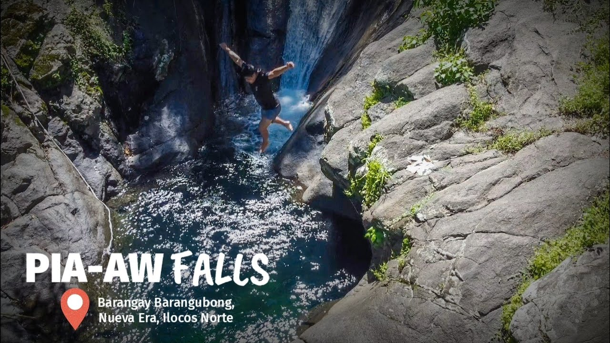

Pia-aw Falls: The Undiscovered Gem of Ilocos Norte
Deep in the lush forests of Nueva Era lies Pia-aw Falls, a mesmerizing waterfall that offers a refreshing escape into nature. Surrounded by towering trees and rocky landscapes, this hidden paradise is perfect for adventure seekers and those looking to unwind in the tranquility of the outdoors. The journey to Pia-aw Falls takes you through scenic trails, shallow streams, and rugged terrains, making the experience as exciting as the destination itself. Upon arrival, visitors are greeted by the sight of clear, cool water cascading into a natural pool, inviting them for a refreshing swim. The peaceful atmosphere, combined with the soothing sounds of flowing water and chirping birds, makes Pia-aw Falls an ideal spot for relaxation and reconnecting with nature. Whether you’re up for an adventure or simply want to enjoy the serene beauty of Ilocos Norte, Pia-aw Falls is a must-visit destination.
Experience the Magic of Pia-aw Falls
A Journey Through Nueva Era’s Natural Wonders
For those who crave adventure, Pia-aw Falls is more than just a scenic spot—it’s an experience. The trek to the falls takes you through stunning landscapes, crossing rivers and climbing rocky paths before reaching the refreshing cascade of water. The trek may be challenging, but the reward is a breathtaking sight of unspoiled nature. The area around Pia-aw Falls is perfect for relaxation, offering visitors the chance to sit by the rocks, enjoy a picnic, or simply soak in the peaceful surroundings. The water is cool and inviting, making it an excellent spot to take a dip after the long trek. Whether you’re a local or a traveler looking to explore the hidden gems of Ilocos Norte, Pia-aw Falls promises an unforgettable experience.